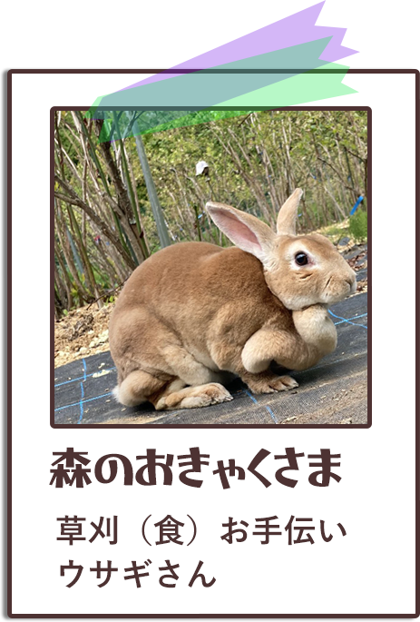
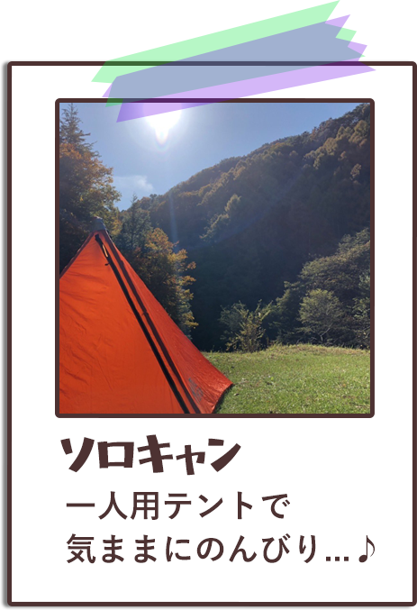
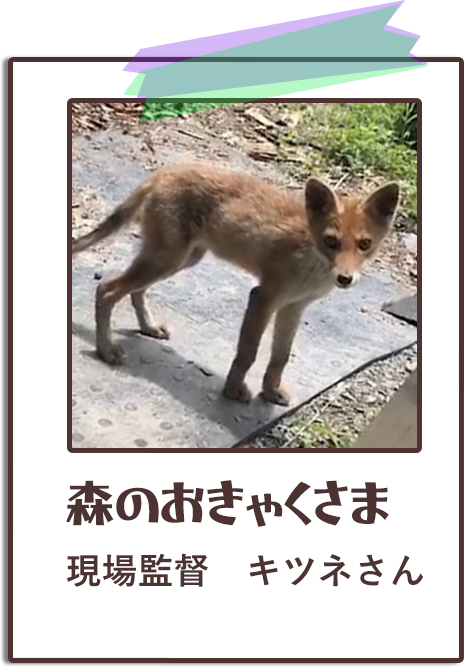
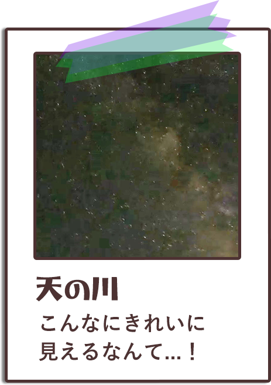
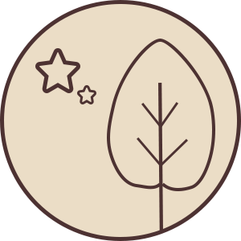

私たちについて
about us
森の中のキャンプ場です。
長野県大鹿村で、
夫婦2人でこぢんまり、運営しています。
2021年4月に、
旦那、東京から長野へ移住。
嫁、東京と長野を行ったり来たり。
ブルーベリー農園と1日5組限定の
小さなキャンプ場をはじめました。
大鹿村について
about Ooshikamura
南アルプスと歌舞伎の里、
長野県下伊那郡大鹿村。
地芝居の大鹿歌舞伎は、
国の重要無形民俗文化財に指定。
南アルプスと伊那山地に囲まれた
山間の土地特有の寒暖差のおかげで実る、
濃厚な味わいのブルーベリーが
特産品です。
長野県下伊那郡大鹿村。
地芝居の大鹿歌舞伎は、
国の重要無形民俗文化財に指定。
南アルプスと伊那山地に囲まれた
山間の土地特有の寒暖差のおかげで実る、
濃厚な味わいのブルーベリーが
特産品です。
アルバム
album




キャンプのお約束
camping rules
旦那が移住を決めた、長野の大自然の中で
星の明かりと、自然の音、そして心の声にも
耳を澄ませてみませんか。
1日限定5組の、こぢんまり、
静かなキャンプ場で
大きく深呼吸、のびやかにお過ごしください。
この小さなキャンプ場での、
ちょっとしたお約束について
ご承知おきくださいますと幸いです♪
チェックアウト 11:30
キャンプ場利用料金
中学生以上 1,500円
小学生 1,000円
幼児 500円
1ブース 5,000円
離れにきれいなトイレ、
お風呂完備。
お風呂は50分500円で
ご利用いただけます。
お風呂完備。
お風呂は50分500円で
ご利用いただけます。

21:00以降はお静かに。星の明かり、自然の音を
お楽しみください。
ごみは200円で、
缶、ビン、ペットボトルは
無料で引き取ります。
缶、ビン、ペットボトルは
無料で引き取ります。
ブルーベリー
blueberry
ブルーベリーオーナーになりませんか？
キャンプ中、摘みたてのブルーベリーを
食べられます♪
もちろん、配送（着払い）も！
無農薬で、あなたの代わりに、
心を込めて育てています！
食べチョク経由でもお試しいただけます！
#森の中のキャンプ場
＃Mori no nakano Campjyo
＼新着情報はSNSをチェック！／
＼予約はDMで受付中！／